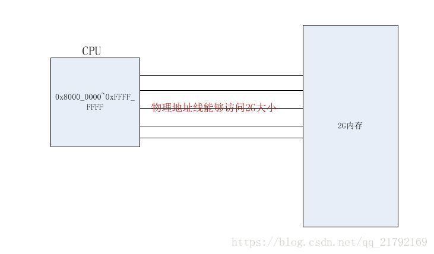
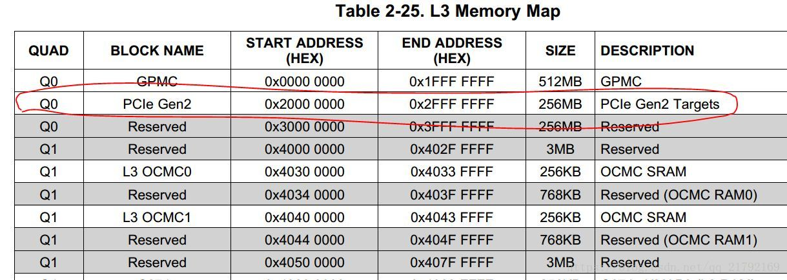

概述
为什么需要写这篇文章，当我阅读《深入浅出 SSD》这篇书籍中 PCIe 章节时发现，本书籍的侧重点是放在 PCIe 控制器和 PCIe 协议上，从 CPU 角度理解 PCIe 知识偏少，本文对下面几个知识点做出一些补充。
CPU 访问外设寄存器与内存编址方式；
CPU 如何访问 PCIe 配置空间；
CPU 能够通过寄存器访问配置空间，为什么还需要映射 PCIe 配置空间；
如何扫描 PCIe 树并且为 PCIe 分配 ID；
如何将 pcie 域地址映射到存储器域地址空间。
通过本篇文章将对问题 1、2、3 做出解答。
统一编址于独立编址
CPU 编址是程序指令与物理地址线建立链接的方式，在 CPU 内部有专门的地址集合，编址过程是由 CPU 体系架构所决定的，参考示意图如图 1 所示（仅仅代表示意图，讲解一种逻辑结构，不代表实际电路）。CPU 编址时就已经指定了 0x8000_0000~0xFFFF_FFFF 这个地址空间为连接到图中内存的地址线，内存如何连接到 CPU 需要当参考 CPU 的 datasheet，当 CPU 程序指令对 0x8000_0000 这个物理地址地址发起访问时，等价于是在访问图中 2G 内存的首地址。

图 1
内存通过 CPU 地址总线来寻址定位，然后通过 CPU 数据总线读写数据。CPU 的地址总线位数是 CPU 设计时确定，因此一款 CPU 所能寻址的地址范围是一定的，而内存是需要占用 CPU 的寻址空间的，内存与 CPU 采用总线直接连接。
IO 指的是与 CPU 连接的各种外设，CPU 访问各种外设有两种方式：一种是类似于访问内存的方式，即把外设的寄存器当成内存地址读写，从文可以以访问内存方式操作外设寄存器。这时，IO 与内存统一编址，IO 地址与内存地址在同一个地址空间下，这种编址方式叫做 IO 与内存统一编址。另外一种编址方式是 IO 地址与内存地址分开独立编址，这种编址方式叫做独立编址，此时，CPU 访问外设寄存器需要通过 CPU 特定的指令去访问外设寄存器，而不能通过地址直接访问外设寄存器。常见的 ARM、PowerPc、MIPS 架构都是采用统一编址，X86 架构采用独立编址。
访问 PCIe 配置空间 256bytes
PCI 总线规定访问配置空间总线事务，使用 ID 号进行寻址。PCI 设备 ID 号由总线号（Bus Number）、设备号（Device Number）和功能号（Function Number）。其中总线号在 HOST 主桥遍历 PCI 总线树时确定，在一颗 PCI 总线树上，总线号由系统软件决定，通常与 HOST 主桥直接相连接的 PCI 总线编号为 0，系统软件使用 DFS（Depth-First Search）算法扫描 PCI 总线树上的所有 PCI 总线，并依次编号。一条 PCI 总线的设备号由 PCI 设备的 IDSEL 信号与 PCI 总线地址线的连接关系确定，功能号与 PCI 设备的具体设计有关。一个 PCIe 系统最多有 256 条 Bus，每条 Bus 上最多可以挂在 32 个设备，每个 PCIe 设备最多有 8 个功能设备。
在 XX 处理器中的 HOST 主桥中，与 PCIE 设备配置相关的寄存器由 CFG_ADDR、CFG_DATA 等组成。系统软件使用 CFG_ADDR（CFG_ADDR 寄存器结构如图 2 所示）和 CFG_DATA 寄存器访问 PCIe 设备的配置空间，这些寄存器都是采取同一编址（所有内存寄存器都使用存储器映射方式进行寻址）。当处理器访问 PCIe 配置空间时，首先需要在 CFG_ADD 寄存器中设置这个 PCIe 设备对应的总线号、设备号、功能号和寄存器偏移，然后使能 Enable 位，之后当处理器对 CFG_DATA 读写访问时，HOST 主桥将这个存储器读写访问转换成 PCIe 配置读写请求，并且发送到 PCIe 总线上。如果 Enable 位没有使能，那么 CPU 对寄存器的访问也就是一个普通 IO 的访问，而不能让 HOST 转换成总线请求访问，访问 PCIe 配置空间时按照 PCIe 总线标准配置 TLP 请求，CFG_DATA 是读取的数据或者待写入的数据。
图 2
31 位：Enable 位，为 1 时，对 CFG_DATA 读写才能转换成 PCIe 总线配置请求。
30~24 位：保留。
23~16 位：总线号，最多 = 256 个。
15~11 位：设备号，最多 = 32 个。
10~8 位：功能号，最多 = 8 个。
7~2 位：寄存器偏移，最多访问寄存器 = 64 个地址，这里一个地址是 DW，那么能干访问的 PCIe 配置空间大小为 64*4=256Byte，所以访问 PCIe 配置空间都是以 4 字节对齐访问的。
走到这里很多读者可能就会有这样的疑问，既然 CPU 能够直接通过寄存器访问配置空间，为啥还会出现配置空间在存储域地址的映射这一说法呢？下面给出详细解答。
访问 PCIe 配置空间寄存器的方法需要追溯到原始的 PCI 规范。为了发起 PCI 总线配置周期，Intel（Intel 是 PCIe 龙头老大，最新的 PCIe 的规范总是它最先尝试的）实现的 PCI 规范使用 IO 空间的 CF8h 和 CFCh 来分别作为索引和数据寄存器，这种方法可以访问所有 PCI 设备的 255 bytes 配置寄存器。Intel Chipsets 目前仍然支持这种访 PCI 配置空间的方法。PCIe 规范在 PCI 规范的基础上，将配置空间扩展到 4K bytes，至于为什么扩展到 4K，具体可以参考 PCIe 规范，这些配置 CFG_ADDR 和 CFG_DATA 寄存器方法仍然可以访问所有 PCIe 设备配置空间的头 255 bytes，但是该方法访问不了剩下的（255B~4K）配置空间。怎么办呢？Intel 外一种 PCIe 配置空间访问方法。Intel Chipset 通过将配置空间映射到内存地址空间，PCIe 配置空间可以像对映射范围内的内存进行 read/write 来访问了。这种映射是由北桥芯片来完成的，但是不同芯片的映射方式也是不同的。目前我查看了 ARM 芯片的 datasheet，确实是这样的方式。
PCIe 规范为每个 PCIe 设备添加了更多的配置寄存器，空间为 4K，尽管 CFG_ADDR 和 CFG_DATA 寄存器方法仍然能够访问 lower 255 bytes，但是必须提供另外一种方法来访问剩下的（255B~4K）range 寄存器。Intel 的解决方案是使用了预留 256MB 内存地址空间，对这段内存的任何访问都会发起 PCIe 配置 cycle。由于 4K 的配置空间是 directly mapped to memory 的，那么 PCIe 规范必须保证所有的 PCIe 设备的配置空间占用不同的内存地址，按照 PCIe 规范，支持最多 256 个 bus，每个 Bus 支持最多 32 个 PCIe devices，每个 device 支持最多 8 个 function, 也就是说：占用内存的最大值为：256 * 32 * 8 * 4K = 256MB。图 3 是 ARM Cortex-A9 datasheet 内存地址分配局部图。被 PCIe 配置空间占用的 256M 内存空间会屏蔽掉 DRAM 使用该段内存区，这些地址都由 CPU 出厂时已经固化好了。

图 3
PCIe 配置空间的内存映射对 32bit 系统的影响
由于 PCIe 配置空间占用了 256M 内存空间，而且该被占用空间对 DRAM 来说是不可用的，这意味着 256M 空间消失于系统内存，这在 32bit 系统中更为明显。比如，在 32 bit winxp 中（作者目前电脑还是用的 XP 系统，电脑用了七八年了），理论上可以访问到的内存是 4G，如果 4G 空间都被 DRAM 给占用，由于 PCIe 的存在，被 PCIe 占用的那部分内存空间对 OS 来说是不可用的，莫名的消失了最多 256M 内存，其实还有其他外设寄存器需要映射到内存，如果是独立编址就不存在寄存器占用内存。所以在 XP 系统中实际能够访问 DRAM 空间最大值为 3.2G。64 位 CPU 寻址不存在这个情况，个地址目前来说应该用不完，这里读者需要注意的是 CPU 有 32 和 64 位寻址方式，同样操作系统也有 32 和 64 位之分，在 Linux 系统中主要体现在库文件上。
有些 CPU 没有直接指定 PCIe 配置空间的地址范围，需要读取某个寄存器的值 BaseAddr，这个值就说 PCIe 配置寄存器在内存区域映射的基地址。访问 PCIe 设备配置空间时候需要手动计算访问 PCIe 配置空间的地址。计算发放如下:
SIZE_PER_FUNC = 4K = 1000h
SIZE_PER_DEVICE = 4K * 8 = 8000h
SIZE_PER_BUS = 4K 8 32 = 100000h
访问总线号为 busNo，设备号为 DevNo，功能号为 funcNo 的 offset 寄存器的计算公式是：
Memory Address = BaseAddr+ busNo * SIZE_PER_BUS+ devNo * SIZE_PER_DEVICE+ funcNo * SIZE_PER_FUNC+ offset
访问 PCIe 配置空间就需要通过总线号、设备号、功能号、寄存器偏移进行转换成内存地址。转换函数如图 2 所示。
图 4
问题 4 和 5 在下面文章中讲解，介于作者实力有限。如有错误，望读者给出宝贵的意见。
剩下两个问题，上电扫描 PCIe 树和存储地址到 PCIe 地址的映射，本篇文章将对这两个问题做出解答。本文可能会针对某一款芯片做出详细流程解答，读者可以只关注整个流程，具体映射机制和寄存器参考芯片 datasheet。上篇文章已经了解到如何访问配置空间，前 256Bytes 可以通过寄存器方式访问，后面的 256B~4k 必须通过映射才能访问，映射无非就是把配置空间映射到存储地址空间，或者把 PCIe 设备空间映射到存储地址空间。下面开始讨论映射关系。
地址映射关系
PCIe 在存储域地址空间分为三部分，PCIe 控制器本身的寄存器、PCIe 设备的配置空间、PCIe 设备空间。寄存器和配置空间由处理器本身决定存储地址范围，本款处理器地址范围如图 1 所示，配置空间地址、寄存器地址、内存地址都已经确定。PCIe 设备空间需要编程人员去配置 Outbound 和 Inbound 寄存器组，确定映射关系
图 5
Outbound 在 PCIe 控制器中扮演的角色是将存储地址翻译到 PCIe 域的 PCIe 地址，Inbound 是将 PCIe 地址翻译成存储地址，图 2 是一个完整的 RC 和 EP 模型地址翻译模型，图中的地址数字仅仅代表一种形态，具体地址应该是什么在后文中讲解。当 cpu 需要访问 EP 的内存空间时，首先应该将存储地址转换成 PCIe 地址，在根据 TLP 到达指定的 EP，进而将 PCIe 地址转换成 EP 端的存储地址。
图 6
PCIe 地址到存储地址之间的映射关系由三个寄存器决定（有两个寄存器组应该是 32 个寄存器）OB_SIZE、OB_OFFSET_INDEXn、OB_OFFSETn_HI，n 的范围是 0~31。在 PCIe 控制器中是把 PCIe 地址等分成 32 块 regions (Regions 0 to 31)，每个 regions 的大小是可以通过编程设置 OB_SIZE 寄存器确定大小，大小有 1, 2, 4, or 8 MB，那么通过 Outbound 能够翻译的地址最大为 8M*32=256M。存储域地址中有 5 位作为识别 32 个 regions 的 index，OB_SIZE 的大小决定这 5 位在 32 位地址上的位置。当 OB_SIZE 等于 0，1，2，3 时，index 在存储地址中对应的位置是 Bits [24:20], bits [25:21], bits [26:22], and bits [27:23]，每个 regions 翻倍，是不是对应的地址应该按翻倍对齐呢，翻倍就是左移一位数据。OB_SIZE 寄存器如图 3 所示。 图 7
图 7
OB_OFFSET_INDEXn 寄存器结构如图 4 所示，n 是上一段落提到的 index 的值。该寄存器第 0 位是地址翻译使能位，第 3120 位是第 n 个 regions 的基地址的 3120 位，这里的取值取决 regions 的大小，当 OB_SIZE 等于 0，1，2，3 时，bits [31:20], bits [31:21], bits [31:22], and bits [31:23] 位相应被使用。OB_OFFSETn_HI 寄存器的值是 64 位 PCIe 地址中第 n 个 regions 的基地址的 63~32 位，在 32 位 PCIe 地址中，该寄存器的值等于 0。
图 8
配置 OutBound 翻译的几个寄存器也做了详解，下面根据举例说明。图 5 中配置空间存储地址由 CPU 本身架构所决定，这部分的地址映射才芯片内部完成，不需要由编程人员配置。PCIe 设备空间被分成了 32 等分。假设 region 大小是 2M，PCIe 地址是 64 位，程序中需要对 0x9D3A_1234 存储地址做映射， 64 位 PCIe 地址被使用在 region 9 上，初始化 OBOFFSET9_HI 值为 0x3344 5566, OB_OFFSET9 值 56Ex xxxx（x 的值这里不关心，看该寄存器结构就很清楚，第 0 位在地址翻译时候应该使能位 1，这里仅仅用来讲解怎么做映射，不需要关心后面的 Bits） ，下面分析怎么翻译到 PCIe 地址：
由于是 regions 大小 2M，那么 index 应该取地址的 bits [25:21]，提取 0x9D3A_1234 存储地址的 bits [25:21 得到 01001b，该值等于 9，那么该地址应该启用 regions 9 翻译。存储地址的 bits [20:00] 是用做翻译到 PCIe 地址的 bits [20:00] 位，该值也可以理解成 reginos 9 内的偏移值，值是 0x001A 1234。
生成 regions 块 PCIe 的基地址，该地址应 pcie_base=OBOFFSET9_HI <<32 + OB_OFFSET9 的 bits [31:21] = 0x 3344 5566 56E0 0000。
计算 PCIe 地址，pcie_addr = pcie_base + 存储地址 bits [20:0] =0x3344 5566 56FA 1234。
图 9
从上面存储地址到 PCIe 地址映射可以看到，通过 cpu 寻址可以直接访问到 PCIe 设备空间，最多可以访问 PCIe 设备空间大小为 256M，具体 Outbound 能够访问的大小根据芯片而定，当 CPU 与 FPGA 之间有大量数据交互时候也可以采用 Inbound 方式（Inbound 地址翻译流程如图 6 所示，这里就不在翻译），将 CPU 的内存映射到 FPGA 的寻址空间（这里是站在 CPU 角度看的，从图 2 可以理解具体映射大小还由 EP 决定），FPGA 可以采用 DMA 方式访问 cpu 的内存，并且速度很快。有些芯片厂商干脆采用同核异构方式将 CPU 于 FPGA 集成在一起（有的将 cpu 与 dsp 集成在一起），两者之间采用 AXI 高速总线通讯。
\ 图 10
扫描 PCIe 树
扫描树的流程如下：
建立存储地址到 PCIe 地址映射 （映射方式上面段落已经讲解了，固定的 PCIe 配置空间映射）
分配 PCIe 总线号
分配设备号
访问配置空间 （这里有一个原则读者需要注意，对 PCIe 设备配置空间访问时，一定要确定总线号、设备号、功能号、寄存器，不然无法找到设备）
读写 BAR0 确定 PCIe 设备 1 空间大小
分配 PCIe 地址
分配总线号
扫描 PCIe 总线树时，需要对这些 PCIe 总线进行编号，即初始化 PCIe 桥（在本文一律指透明桥）的 Primary、Secondary 和 Subordinate Bus 寄存器。在 Linux 内核中采用 DFS 算法对 PCIe 总线树进行遍历，DFS 算法是按照深度优先的原则遍历 PCIe 树，局部代码如图 7 所示，这里可以跟踪 pci_scan_bridge 函数，函数采用 DFS 算法对总线进行编号（后期会讲解搜索树，比较常见 hash 表、红黑树）。
图 11
分配设备号
PCIe 设备的 IDSEL 信号与 PCIe 总线的 AD [31:0] 信号的连接关系决定了该设备在这条总线上的设备号。在配置读写总线事务的地址周期中，AD [10:0] 已经被信号已经被功能号和寄存器号使用，因此 PCIe 设备的 IDSEL 只能与 AD [31:11] 信号连接。上一篇文章中谈到 CONFIG_ADDR 寄存器中的 Device Number 字段一共有 5 位，最大能够表示 32 个设备，这里只有 21 位，显然在两者之间不能建立一一映射关系。一个 PCIe 总线号下最多可以挂在 21 个 PCIe 设备，那么多个 PCIe 总线不就可以挂载 32 个设备了么。
访问配置空间
在 32 位 PCIe 地址空间中，PCIe 设备通常将 PCIe 配置存放在 E2PROM 中，PCIe 设备进行上电初始化时，将 E2PROM 中的信息读到 PCIe 设备的配置空间作为初始值，由硬件自动完成。BAR0 空间存储了 PCIe 设备空间的大小，某些位被设置成不可预读，当 BAR0 全部写入 1 时，然后在读取 BAR0 值，从数据低位看有多少连续位没有改变。没有改变的数据位数记录的该 PCIe 设备空间的大小，假如有 n 位没有改变，那么设备空间大小应该是 2 的 n 次方。第 0 位代表 IO/Memory、第 2，3 位代表 32/64 位地址、第 4 位代表是否可预取，具体位定义格式可以直接参考内核 PCIe 总线代码，解析 BAR 函数如图 8 所示。
图 12
分配 PCIe 地址
系统软件根据根据设备空间大小建立存储地址 PCIe 设备地址空间的映射，给 PCIe 设备分配的 PCIe 基地址写入到 BAR0，如果是 64 位 PCIe 地址，那么 BAR1 是高 32 位地址。
结语
写《从 cpu 角度理解 PCIe》文章我参考了部分芯片的 datasheet，并结合 linux 代码分析，本文仅仅起到分析流程的作用，具体映射机制和寄存器芯片参考相应芯片 datasheet。如有错误，还望指正。